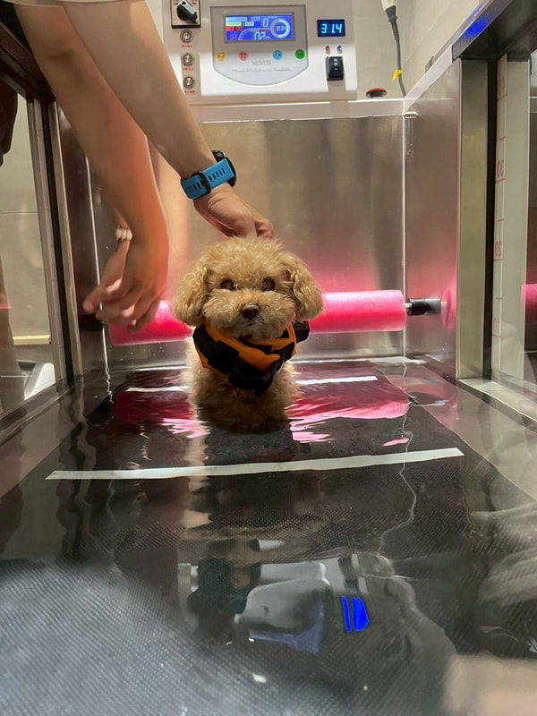
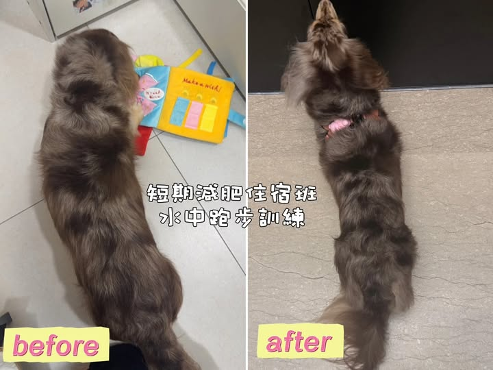
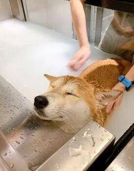
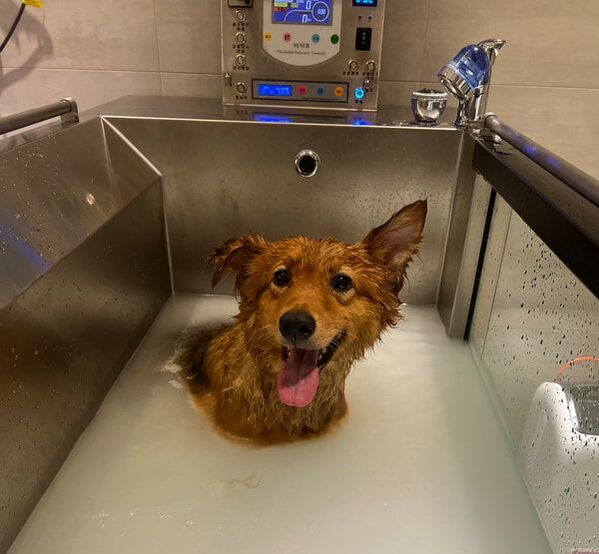

避開高溫與燙腳柏油路：毛孩缺乏汗腺，室內水療讓運動不再是痛苦的熱力考驗
無畏颳風下雨：全天候舒適的室內空間，隨時都能進行溫和的全身鍛鍊
藉由水的「阻力」與「浮力」支撐體重，大幅降低關節承重負擔。不僅能提升心肺耐力、訓練肌肉力量，更能讓年老、肥胖或需要復健的狗狗，在不傷關節的情況下達到全身運動的絕佳效果




純天然、無添加！運用雙核心專利技術（分子對撞及超高頻磁波切割），將自來水轉換為乳白色奈米超微細氣泡。
深層清潔：水分子奈米化後能迅速滲透毛孔，溫和除去全身老舊角質與深層油垢
活氧舒緩：高含氧磁化水增加保濕與血液含氧量，促進新陳代謝，讓毛髮蓬鬆柔軟有彈性
對抗潮濕敏感：減少過度使用洗劑的化學殘留，舒緩海島氣候引起的肌膚發炎與抓癢困擾
極致放鬆：泡澡同時配合頭部、頸肩及腿部輕柔按摩，徹底放鬆緊繃肌肉
設備規格與價格
百分百台灣製造（MIT）並榮獲國內發明獎的專業水療機型
過程皆搭配嚴選無化學藥劑、無濃郁香味的專業低敏洗劑
| 設備機型 | 適合體型 | 單堂(約40分鐘) | 特色功能與優勢 |
|---|---|---|---|
| 旗艦版 4個水中鏡頭 |
70 KG 以下 中大型犬 |
$ 1200 買 5 送 1 買 10 送 3 |
🏆台大同款機型！ ・鏡頭無死角，掌握水下運動狀況 ・可自由調節速度與「升降坡度」 ・可選用純氧牛奶浴（具殺菌效果） |
| 小型版 1個水中鏡頭 |
20 KG 以下 中小型犬 |
$ 1000 買 5 送 1 買 10 送 3 |
・專為小型犬設計 ・可調節速度 循序漸進達到最佳復健與運動效果 |
| 體型分類 | 單次(約30分 / 旗艦版) | 單次(約30分 / 豪華版) |
|---|---|---|
| 小型毛孩 | $ 400 買 5 送 1 |
$ 600 買 5 送 1 |
| 中型毛孩 | $ 600 買 5 送 1 |
$ 800 買 5 送 1 |
| 大型毛孩 | $ 800 買 5 送 1 |
$ 1200 買 5 送 1 |